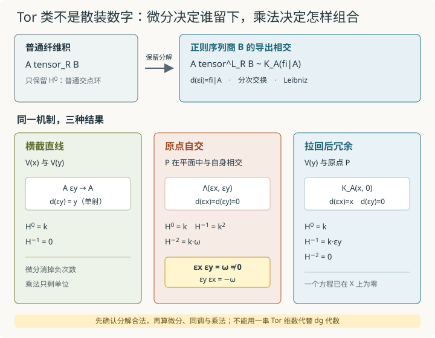

本页目录
基础衔接 20 · 导出纤维积的乘法：Tor 不只是一串维数
先修：链复形、张量积与 Tor、相交、接触阶与 Tor。前几讲已经会算 \(H^{-i}=\operatorname{Tor}_i\)；本讲继续追问：这些同调类怎样相乘？答案要回到计算同调之前的交换 dg 代数，而不是只把各次数维数列成表。
一个点与自己相交，为什么会长出能相乘的负次数方向？
1. 普通纤维积只保留零次账本
全讲固定系数域 \(k=\mathbb C\)，采用上同调编号，微分次数为 \(+1\)。设
都是仿射，并有环映射 \(R\to A,R\to B\)。普通纤维积仍是仿射概形：
若张量破坏单射，\(A\otimes_RB\) 只留下余核。导出纤维积把张量本身替换成导出张量：
右边一般不再是一个只位于次数 0 的普通环，而是非正次数的交换 dg 代数，或在更一般基础上用等价的导出交换环模型表示。它的同调满足
但“各个 Tor 群是什么”还没有说完。链级对象有乘法，微分与乘法相容；因此同调的直和
也是一个分次代数。两个负一次类的积可能生成负二次类。只记录维数，会把这条关系删掉。
2. Koszul 代数：把方程、符号和微分装进同一个对象
先取 \(R\) 中的正则序列 \(f_1,\ldots,f_r\)，令
Koszul 代数在底层分次代数上是外代数
并规定
乘法满足分次交换律
特别地，两个次数 \(-1\) 的生成元换位会变号：
微分不是随意逐格填写的矩阵；它由分次 Leibniz 规则唯一延拓：
例如
再作用一次微分得到 \(f_if_j-f_jf_i=0\)。所以 \(d^2=0\) 与底环交换性、换位符号共同配合，而不是额外的巧合。
正则序列条件保证增广映射
是自由分解。于是若 \(\bar f_i\) 表示 \(f_i\) 在 \(A\) 中的像，便可用交换 dg 代数
计算导出相交。这一步很关键：Koszul 复形之所以能代表导出张量，是因为张量之前它确实分解了 \(B\)。 若最初的 \(f_i\) 不是正则序列，朴素 Koszul 复形可能已有高次同调，不能未经检查就把它叫作 \(B\) 的分解；一般情形要换用保留乘法的合适半自由交换dg代数或Tate型分解。仅有底层模的K-flat分解可以算Tor群，却不会自动提供所需的交换dg代数乘法。
一般仿射构造怎样落到这份计算？
在特征0的当前约定下，可以从自由交换R-代数 \(Q^0=R[t_i]\) 到B的满射开始，逐层附加负次数生成元：先用次数−1生成元的微分记录核中的关系，使 \(H^0=B\)；再对仍未消失的负一次闭元附加次数−2生成元，以这些闭元为微分；如此向负次数递推，杀掉剩余负次同调。偶次数生成元按多项式方式相乘，奇次数生成元按外代数方式相乘，微分始终遵守分次Leibniz规则。可能需要无限多个生成元或无限层，不能假定每个商都有两步有限模型。
所得半自由交换dg代数增广 \(Q\to B\) 是拟同构，且可作为合适的导出代数分解；用 \(A\otimes_R Q\) 表示导出张量。Koszul正则序列例恰好不需要在外代数之后继续加高阶生成元。不同选择的比较须在拟同构所定义的导出意义下进行；这里给出计算构造，不声称已建立模型范畴或全部粘合理论。
一个直接的失败对照：在 \(R=k[x]\) 中用重复方程 \((x,x)\) 表示商 \(B=k\)。其Koszul复形有闭元 \(\eta=\varepsilon_2-\varepsilon_1\)，且 \(d(\varepsilon_1\varepsilon_2)=x\eta\)，所以 \(H^{-1}=k\eta\ne0\)。它不是B的分解。若取A=R，真实的 \(R\otimes_R^{\mathbf L}B\simeq B\) 无负次同调，错误地套这个Koszul复形却会多出一类。非正则输入的修复需要继续加生成元杀同调，而不是把错误结果改名成Tor。
3. 横截直线：微分消掉全部负次数
令
用 \(K_R(y)\) 分解 \(B\)，再张量到 \(A\)，得到
因为 \(y\) 在 \(A=k[y]\) 中不是零因子，微分单射，所以
导出纤维积在本例没有额外同调，等价于普通的一个交点。这里“横截”不是靠图上看起来有一个角度来证明，而是由 \(y\) 拉回 \(A\) 后仍为非零因子完成代数核验。
4. 原点自交：一张可复算的完整乘法表
现在令 \(P=V(x,y)\subset\mathbb A_k^2\)，其坐标环是
用 \(K_R(x,y)\) 分解右边的 \(B\)。张量到左边的 \(A=k\) 后，\(x,y\) 都变成零，因此
链群与同调完全相同：
由于没有非零微分，下面就是同调代数的完整基乘法表。令 \(\omega=\varepsilon_x\varepsilon_y\)：
| \(\cdot\) | \(1\) | \(\varepsilon_x\) | \(\varepsilon_y\) | \(\omega\) |
|---|---|---|---|---|
| \(1\) | \(1\) | \(\varepsilon_x\) | \(\varepsilon_y\) | \(\omega\) |
| \(\varepsilon_x\) | \(\varepsilon_x\) | \(0\) | \(\omega\) | \(0\) |
| \(\varepsilon_y\) | \(\varepsilon_y\) | \(-\omega\) | \(0\) | \(0\) |
| \(\omega\) | \(\omega\) | \(0\) | \(0\) | \(0\) |
例如 \(\varepsilon_x\varepsilon_y=\omega\ne0\)，而 \(\varepsilon_y\varepsilon_x=-\omega\)。维数列
并没有告诉我们哪个负一次方向相乘生成了顶次类，也没有告诉我们换位的符号。乘法表保留了这份信息。
几何上，普通自交 \(P\times_{\mathbb A^2}P\) 仍只是 \(P\)；导出自交额外记录两个定义方程在 \(P\) 上同时失去约束力。\(\varepsilon_x,\varepsilon_y\) 是次数 \(-1\) 的同调方向，不是又添了两个集合论点；\(\omega\) 也不是第三个隐藏点。

同一个 Koszul 机制会给出三种不同答案：微分可消掉负次数，也可因方程失效而留下类；留下来的类还带分次交换乘法，不能只报 Tor 的维数。
5. 方程拉回后冗余：有一个负一次类，但没有负二次类
仍在 \(S=\mathbb A_k^2\) 中，令
并让 \(Y=P=V(x,y)\)，\(B=R/(x,y)=k\)。序列 \(x,y\) 在 \(R\) 中正则，所以 \(K_R(x,y)\) 确实分解 \(B\)。张量到 \(A\) 后，两个方程分别变成 \(x\) 与 \(0\)：
把三项和微分写全：
因为 \(A=k[x]\) 是整环，\(ax=0\) 推出 \(a=0\)。所以负一次闭元都是 \(b\varepsilon_y\)；其中 \(x\varepsilon_y\) 又是负二次元素的边界。于是
普通交集仍是原点。负一次类 \(\varepsilon_y\) 记录：定义 \(Y\) 的方程 \(y\) 拉到已经满足 \(y=0\) 的 \(X\) 上后完全冗余。它的平方为零，而且不存在可由两个负一次类生成的非零负二次同调。这与原点自交的外代数乘法明显不同。
注意“冗余”发生在拉回以后。原序列 \(x,y\) 在 \(R\) 中仍是正则序列，因而我们使用的 Koszul 分解合法；不能把“拉回后的序列不再正则”误说成“原分解从一开始就无效”。
6. 为什么链级 Leibniz 规则保证乘法能下降到同调？
若 \(u,v\) 都是闭元，则
所以闭元的积仍闭。若 \(u=d(w)\) 是边界而 \(v\) 闭，则
仍是边界。改变任一同调类的代表元都不会改变乘积类，因此链级乘法诱导
这说明为什么只拿一个普通自由分解算出 Tor 群还不总能自动得到想要的乘法：需要在链级保留兼容的代数结构。Koszul 分解的优势正是把外代数乘法与微分同时给出。
不同合法分解可能长得很不一样，生成元名称也不具有绝对意义；它们表示同一个导出张量时，在适当的导出意义下等价，并给出相容的同调代数。不变量是导出代数对象及其等价类，不是某张矩阵或某组手选符号。
7. 三种相交放在同一张乘法账本里
| 情形 | 拉回后的 Koszul 方程 | \(H^0\) | 负次数同调 | 关键乘法 |
|---|---|---|---|---|
| \(V(x)\) 与 \(V(y)\) 横截 | \((y)\) 于 \(k[y]\) | \(k\) | 0 | 只有单位 |
| 原点与自身相交 | \((0,0)\) 于 \(k\) | \(k\) | \(H^{-1}=k^2,H^{-2}=k\) | \(\varepsilon_x\varepsilon_y=\omega\ne0\) |
| 直线 \(V(y)\) 与原点 | \((x,0)\) 于 \(k[x]\) | \(k\) | \(H^{-1}=k,H^{-2}=0\) | \(\varepsilon_y^2=0\) |
第一行称为 Tor 独立：高次 Tor 全消失。后两行的普通交点都还是同一个 \(k\)-点，但导出结构不同；甚至只知道“是否有 \(H^{-1}\)”也不足以区分全部乘法。
若某一方在 \(R\) 上平坦，则普通张量已经计算导出张量，高次 Tor 消失。反过来，在给定一对对象上高次 Tor 消失，只说明这一次基变换或相交 Tor 独立，不自动证明其中某个对象对所有输入都平坦。
8. 先检查闭元，再问同调类的乘积
第一个实验切换横截、自交、包含及迁移题中的抛物线。它用精确有限整数多项式和外代数符号计算微分、uv、vu及最高外积的微分。核、像和商的结论另标为正文已经证明的解析结果；没有把 \(k[x]\) 截断成有限维矩阵来冒充同调计算。
默认原点自交取 \(u=\varepsilon_x,v=\varepsilon_y\)，得到 \(du=dv=0\)、\(uv=\omega\)、\(vu=-\omega\)。切到横截时 \(d\varepsilon_y=y\ne0\)，不能把链级生成元本身称作同调类。切到包含情形，\(\varepsilon_y\) 闭，而 \(x\varepsilon_y=d\omega\) 为边界。抛物线中的闭元则为 \(\eta=\varepsilon_y-x\varepsilon_x\)。
无脚本后备：三种相交的链群、微分、核/像与商见第3—7节。原点自交的完整基乘法表在第4节，抛物线的η计算见题二答案。
第二个实验把原点自交推广到 \(\mathbb A^r\)，\(1\le r\le4\)。令 \(u=\varepsilon_1\)、\(v=\varepsilon_2\cdots\varepsilon_r\)；r=1时右边是空积1。uv生成负r次同调，而换序给
若让右因子也含 \(\varepsilon_1\)，乘积便因重复生成元而变成零。图上同时给出 \(\dim H^{-i}=\binom ri\)，但先读表中的实际非零外积与换位符号，避免再次把代数缩减为维数。
无脚本后备：r2时维数(1,2,1)，ε1ε2=−ε2ε1；r3时维数(1,3,3,1)，ε1与ε2ε3换序不变号。任何重复生成元的外积为0。
9. 两道迁移题
题一。 令原点 \(P=V(x,y,z)\subset\mathbb A_k^3\) 与自身做导出自交。写出一个 dg 代数模型、各次同调维数，并计算
查看答案：三条失效方程生成一个外代数
序列 \(x,y,z\) 在 \(R=k[x,y,z]\) 中正则。用它的 Koszul 代数分解一份 \(k\)，再张量另一份 \(k\) 后三个方程都变成零：
因此
按生成元次序 \(x<y<z\) 化简：
生成 \(H^{-3}\)，而交换前两个负一次生成元给
每个生成元平方为零。维数 \(1,3,3,1\) 是二项式系数，但符号与哪些类相乘非零仍须由外代数结构给出。
题二。 仍取 \(R=k[x,y]\) 与原点 \(Y=V(x,y)\)，但令
把 \(K_R(x,y)\) 拉到 \(A\) 后方程变成 \((x,x^2)\)。计算 \(H^0,H^{-1},H^{-2}\)，并找出一个负一次生成类。为什么这个计算合法，而直接拿任意非正则方程列的 Koszul 复形冒充分解可能不合法？
查看答案：冗余关系表现为一个 syzygy 类
拉回后的 dg 代数为
其中 \(d\varepsilon_x=x,d\varepsilon_y=x^2\)。负一次元素 \(a\varepsilon_x+b\varepsilon_y\) 闭合当且仅当
因 \(A=k[x]\) 是整环，闭元恰为 \(b\eta\)，其中
另一方面，
所以 \(x\eta\) 是边界，得到
\(\eta^2=0\)。合法性来自张量之前的 \(x,y\) 是 \(R\) 中正则序列，\(K_R(x,y)\) 已经是 \(B=k\) 的自由 dg 代数分解；\((x,x^2)\) 的非正则性只在拉回到 \(A\) 后出现，正是导出张量要检测的现象。若一开始就在某环里随意选非正则生成元，其 Koszul 复形未必分解目标商环，便不能自动代表相应导出纤维积。
10. 本讲到哪里为止？
本讲严格完成的是复数仿射完全交情形的有限计算：用正则序列的 Koszul dg 代数表示导出张量，求同调，并保留分次乘法。它解释了横截、原点自交和拉回后冗余方程的差别。
尚未完成的内容包括：一般导出交换环的模型范畴或 \(\infty\)-范畴构造、仿射模型的下降与粘合、余切复形和形变阻碍、过量相交公式、虚基本类，以及 dg 代数可能携带的更高同伦相干信息。这里也没有建立完整导出范畴课程，更没有进入 D-模在模叠上的六函子形式；这些分别留给后续 A5 与 A6，不能由三张 Koszul 表格代替。
链级模型往往比同调代数还保留更多信息。即使两份 dg 代数的同调分次环同构，也不能不加条件地断言它们准同构；还需研究形式性或更高运算。本讲的三个有限 Koszul 模型都可直接计算，但不提供这种一般判据。
速查与资料
导出纤维积在仿射图上由导出张量描述；Koszul 代数把方程写成负一次生成元的微分；分次 Leibniz 规则让乘法下降到同调；自交的 Tor 类组成代数，而不是互不相干的向量空间名单。
Koszul 复形作为外代数与微分导子的定义见 Stacks Project：The Koszul complex，正则序列给出 Koszul 正则性见 Koszul regular sequences；dg 模上的导出张量见 Derived tensor product，同调类乘积的链级良定义性可对照 Products and Tor。导出仿射纤维积、普通截断与高阶 Tor 的几何关系见 Toën 的 Derived Algebraic Geometry，特别是其仿射纤维积与自交讨论。本文三个 Koszul 例子均在正文逐项计算。资料核查：2026-09-09。
下一步可用导出范畴与roofs把拟同构真正形式求逆，借同伦拉回或射影提升计算复合，并追踪Ext类的代表元与同伦见证。